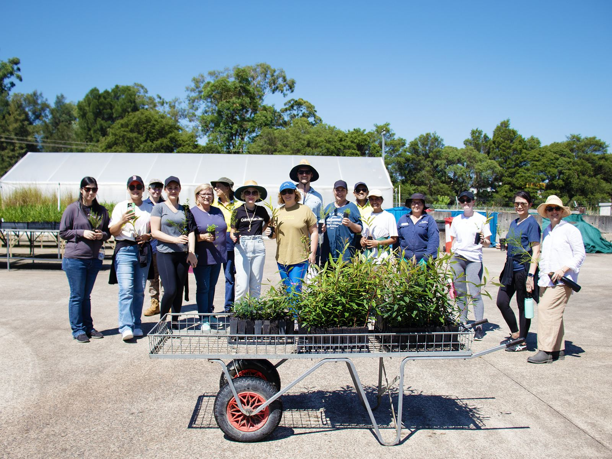
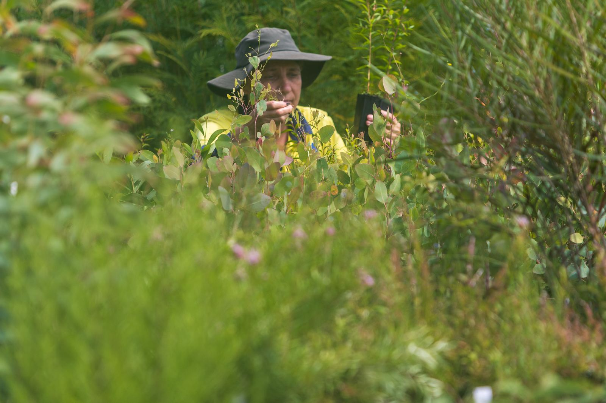
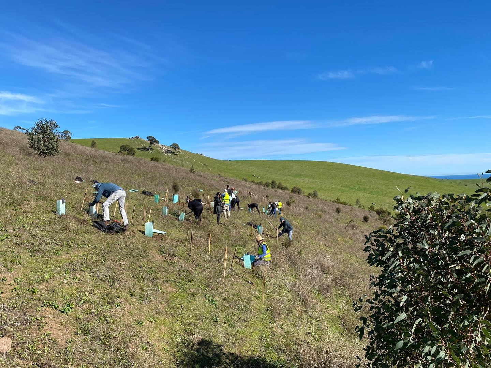
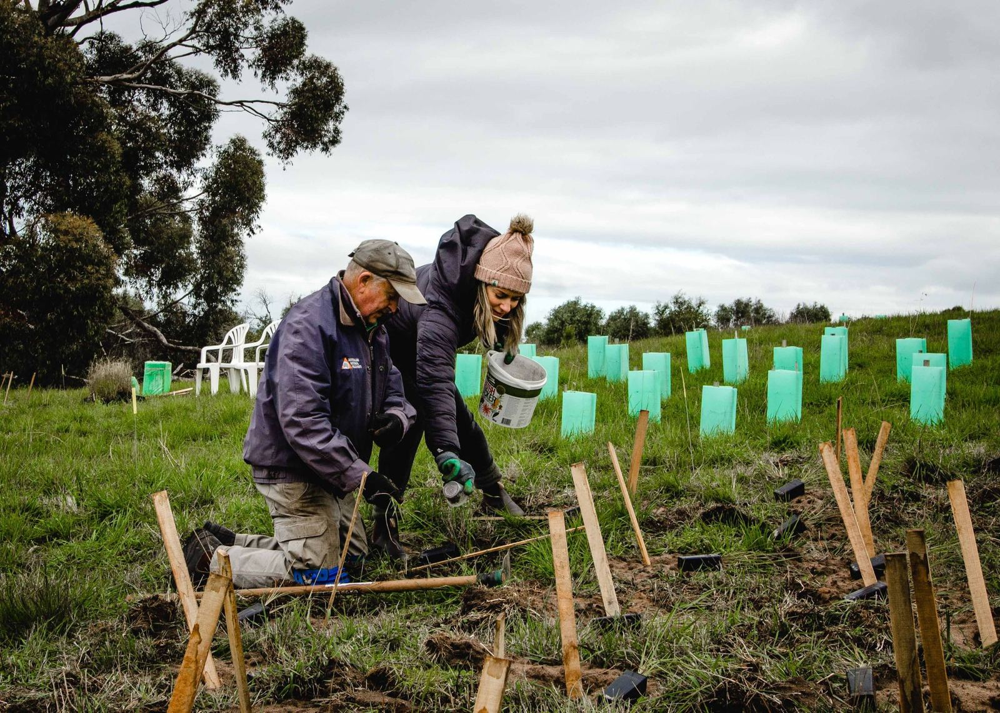
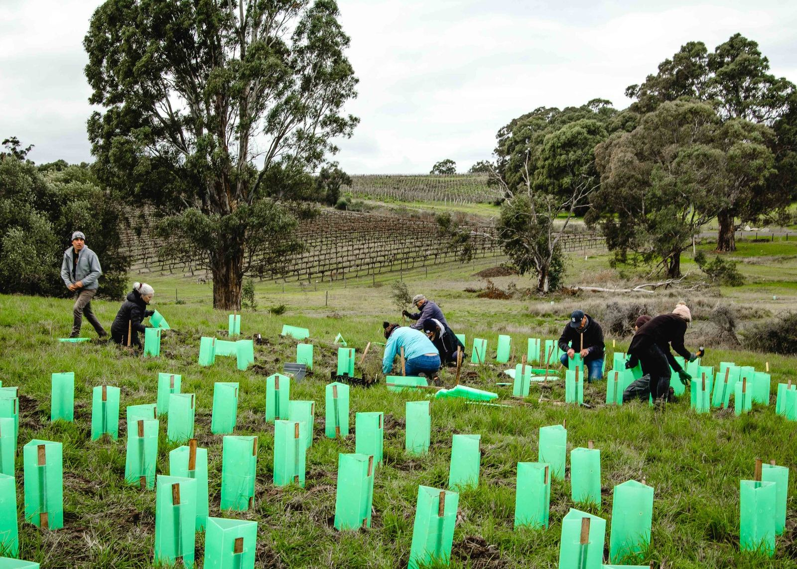
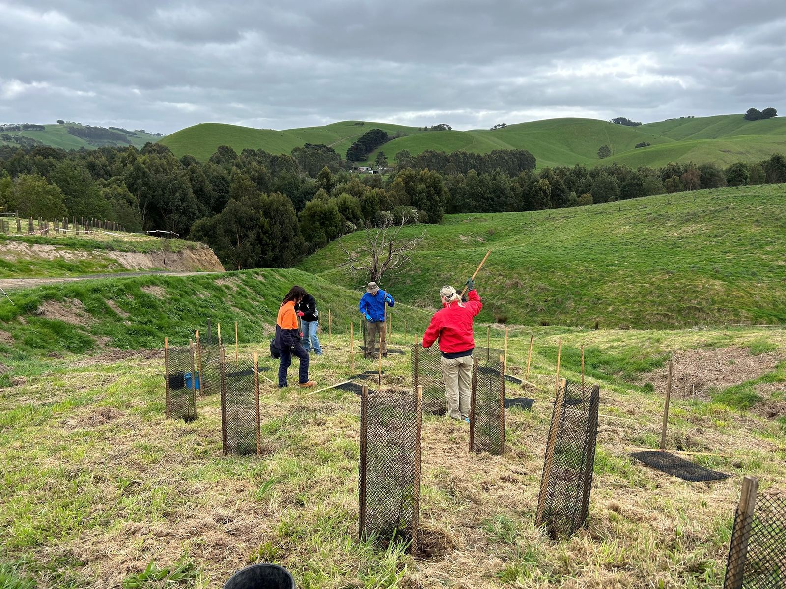

South Australia sites
13 sites across South Australia where your team can spend a day on the ground. 7 parks, 3 national parks, 2 nurserys and 1 beach, between 9 and 62 km from the Adelaide CBD. Pick one from the map or the list, then send us your dates from the form below.
- 1 Beach
- 3 National Parks
- 2 Nurserys
- 7 Parks
The map is zoomed to where the sites actually are; the small inset shows that area within South Australia. Pin positions are approximate. Hover a pin to find it in the list, or tap one to jump straight to it.
13 sites
-
1
Anstey Hill Recreation Park
Perseverance Road, 5091
16 km from the Adelaide CBD
Managed with NPWS (DEW) - SA Friends of Parks South Australia Group
-
2
Belair National Park
Upper Sturt Road, 5052
10 km from the Adelaide CBD
Managed with NPWS (DEW) - SA Friends of Parks South Australia Group
-
3
Black Hill Conservation Park
Ghost Tree Gully Trail, 5076
13 km from the Adelaide CBD
Managed with NPWS (DEW) - SA Friends of Parks South Australia Group
-
4
Charleston Conservation Park
Park Road, 5244
27 km from the Adelaide CBD
Managed with NPWS (DEW) - SA Friends of Parks South Australia Group
-
5
Glenthorne National Park - Ityamaiitpinna Yarta
Majors Road, 5158
15 km from the Adelaide CBD
Managed with NPWS (DEW) - SA Friends of Parks South Australia Group
-
6
Morialta Conservation Park
Morialta Falls Road, 5072
9 km from the Adelaide CBD
Managed with NPWS (DEW) - SA Friends of Parks South Australia Group
-
7
Onkaparinga River National Park
Piggott Range Road, 5167
26 km from the Adelaide CBD
Managed with NPWS (DEW) - SA Friends of Parks South Australia Group
-
8
Para Wirra Conservation Park
Para Wirra Drive, 5114
35 km from the Adelaide CBD
Managed with NPWS (DEW) - SA Friends of Parks South Australia Group
-
9
Sandy Creek Conservation Park
Barossa Valley Highway, 5350
42 km from the Adelaide CBD
Managed with NPWS (DEW) - SA Friends of Parks South Australia Group
-
10
Semaphore Largs Dunes Group
Semaphore Road, 5019
15 km from the Adelaide CBD
Managed with NPWS (DEW) - SA Friends of Parks South Australia Group
-
11
The Forktree Project
103 Whitelaw Road, 5204
57 km from the Adelaide CBD
Managed with The Forktree Project
-
12
Wangkuntila-Aldinga Conservation Park
Dover Street, 5173
42 km from the Adelaide CBD
Managed with NPWS (DEW) - SA Friends of Parks South Australia Group
-
13
Yankalilla Community Nursery
1 Kemmiss Hill Road, 5203
62 km from the Adelaide CBD
Managed with District Council of Yankalilla
No sites of that type in South Australia. Choose another type, or pick All.
What a day looks like.






Photographs from corporate volunteering days around the country. PLACEHOLDER: swap for photographs of the SA sites when we have them.
Ready to get into the field?
Submit an enquiry or call our team direct to chat about creating a corporate volunteering day that works for your organisation. Together, we can care for nature, strengthen communities and help shape a future where people and the environment thrive.
1800 898 626 How it works- Enquire Tell us your state, team size and rough dates.
- Choose your site Pick from the South Australia sites above, and we confirm availability, the activity and the date.
- Logistics sorted Permits, insurance, tools, safety gear and catering, all arranged.
- Out in the field Our rangers run the day. You bring closed shoes and a hat.
Plan your volunteering day
We’ll be in touch within two working days. By submitting you consent to FNPW contacting you about your enquiry.